FormLayout class that implements an constraint-based layout manager. With constraint-based layout, you have independent control over the sizing behavior of each of the four sides of a widget. The top, bottom, left, and right sides can be independently attached to the sides of the parent container or the sides of any sibling widget within the same container using either fixed or relative offsets. This proves to be surprisingly powerful and can be used to emulate almost any of the other layout managers. The FormLayout class is very simple and only specifies the margins of the container. The real power is in the FormData object, which holds up to four different FormConstraint objects.
In Automatic Mode, attachments are determined automatically based on the position of the widgets themselves. In Classic mode, full control over the attachments on each widget side is available.
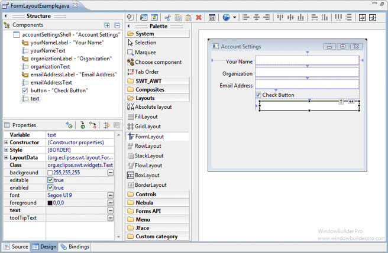
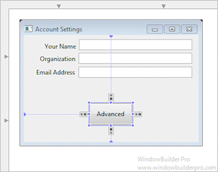
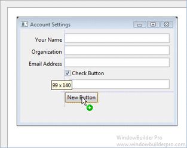 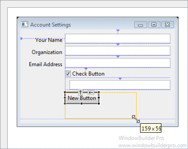
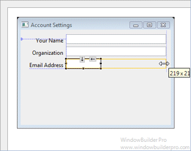
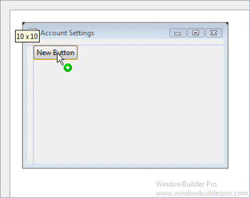 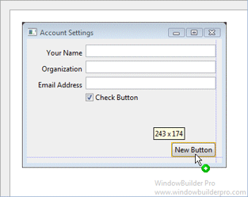
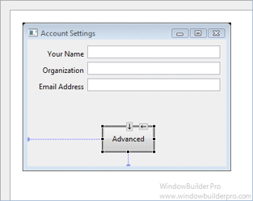 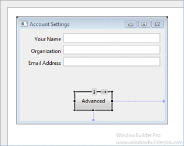
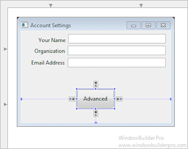
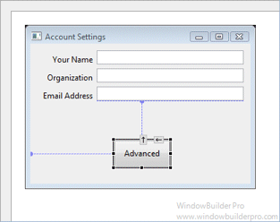
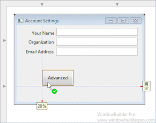 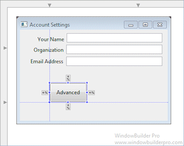
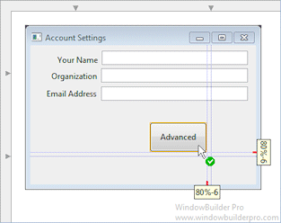 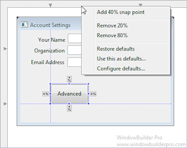

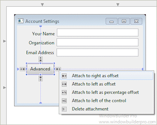 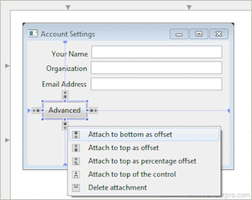
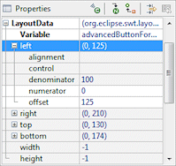
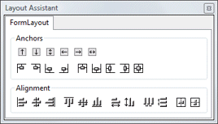